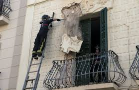

En Chile es raro que alguien corra cuando hay un fuerte terremoto. En Japón los trabajadores han seguido en sus puestos durante seísmos de magnitud 8 en la escala de Richter casi sin inquietarse, mientras que los estadounidenses hacen regularmente simulacros de seísmos. Los habitantes de estos países también se asustan cuando tiembla la tierra, como ayer ocurrió en Melilla, Andalucía y el norte de Marruecos al registrarse de madrugada en el Mar de Alborán un terremoto de magnitud 6,3 en la escala de Richter (una treintena de personas resultaron heridas leves en Melilla mientras que un niño de 12 años murió en Alhucemas, Marruecos, debido a un infarto).
En Chile, Japón o EEUU están acostumbrados y saben perfectamente cómo deben actuar para limitar los daños. También saben que la mayor parte de sus edificios e infraestructuras se han diseñado siguiendo estrictas normas antisísmicas para aguantar. No se puede evitar que haya muertos, pero sí se puede reducir el número de víctimas, la mayoría de las cuales se produce por el derrumbe de edificios o la caída de objetos de las fachadas, como recuerda el geólogo Antonio Aretxabala, director técnico del Laboratorio de Arquitectura de la Universidad de Navarra.
«Las nueve personas que murieron durante el terremoto de Lorca de 2011 salieron corriendo a la calle, que es precisamente lo que no se debe hacer», señala Aretxabala, que considera que pese a los indudables avances, en España todavía se puede hacer mucho más para limitar el impacto de seísmos. Enseñar a la gente cómo actuar ante un terremoto es sólo una de las asignaturas pendientes. «No importa que se viva en una zona de bajo riesgo sísmico. La gente viaja y puede sufrir un terremoto en cualquier lugar», advierte.
Aunque el riesgo sísmico en España no es comparable al de Chile, Japón o la costa oeste de EEUU, los estudios geológicos y los registros históricos no ofrecen dudas. El sur de la Península Ibérica es un área vulnerable a sufrir terremotos destructivos. El más grave registrado en Europa ocurrió en 1755, se conoce como el terremoto de Lisboa y originó un tsunami que causó la muerte a unas 100.000 personas (la mayoría en Portugal, pero también en el norte de Marruecos y Andalucía). Se estima que tuvo una magnitud de 8,5 en la escala de Richter. El primer registro de un gran terremoto en nuestro país se remonta a 1048 en Orihuela (Alicante).
La zona de los Pirineos también es vulnerable, aunque en menor medida que el sur: «En los últimos 600 años, ha habido una docena de terremotos de intensidad superior a VIII en la zona pirenaica», dice Aretxabala. Así, en el año 1428, 800 personas murieron tras un terremoto de intensidad IX-X que destruyó Queralbs (Girona).
Según aclara el geólogo, la intensidad hace referencia a los daños producidos, mientras que la escala logarítmica de Richter, que se usa desde los años 30 del siglo pasado, refleja la magnitud e indica la energía que libera el seísmo: «Un terremoto de alta magnitud puede tener baja intensidad si, por ejemplo, se produce lejos de zonas habitadas».